본문
규제샌드박스를 통한 산업융합 신제품의 신속시장진출
한국건설생활환경시험연구원 팀장 최재석
최근 AI, 빅데이터, IoT 등 융복합으로 기존 법∙제도를 뛰어넘는 신제품∙서비스 모델이 빠르게 창출되고 있으며, 우리 삶의 편리함을 주는 단순한 융합제품에서부터 전기자동차, 자율주행, UAM, 웨어러블디바이스 등 신산업을 창출시킬수 있을 정도로 새로운 융복합 제품과 시스템이 출시가 가속화되고 있다.
산업융합이란 산업간, 기술간, 기술과 산업간의 창의적인 결합과 복합화를 통하여 새로운 사회적 시장적 가치가 있는 산업을 창출하는 활동을 말하며, 새로운 신기술·신제품과 새로운 서비스까지 포함하는 폭넓은 개념이라고 할 수 있다.
산업융합의 유형 및 사례를 보면, 표 1과 같이 신기술간 융합으로써 BT, IT, NT, CT 분야등 첨단 신기술간 융합을 통해 확보되는 혁신 기술과 제품을 들 수 있는데, BMI(Brain Machine, Interface), Bioinformatics, 생체신호측정, 가상현실 등에서 신속하고, 다양한 서비스를 제공할 수 있다.
| 융합유형 | 사 례 | 내 용 | |
|---|---|---|---|
| BT+IT+CT | 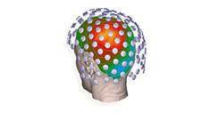 | BMI (Brain Machine Interface) |
뇌와 기계(컴퓨터 등)의 연결을 통한 인간 의지발현 기술로 인간과 기계의 상호작용을 활용한 삶과 건강의 향상(예: 생각을 컴퓨터에. 내재하여 다양한 신체 및 뇌신경 장애 극복) |
| BT+IT | 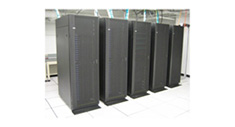 | Bioinformatics (생물정보학) |
인간 혹은 지구상 모든 생명체의 게놈 정보를 분석하고 그 생물학적 의미를 밝힘 (예: 이를 맞춤 의학 혹은 생물체의 산업화에 활용) |
| BT+NT | 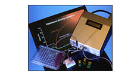 | 생체신호측정 | 나노기술을 이용하여 생체신호를 측정하거나 조절하는 제품개발 (예: 나노 구조체를 이용하여 분자수준에서 생체 물질을 검출하는 기술을 개발하여 정확하거나 빠른 진단실시) |
| CT+IT | 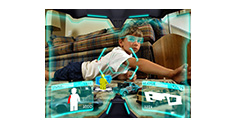 | 가상현실 | 특정한 상황 혹은 사람을 가상으로 만들어서, 그것을 사용하는 사람이 마치 실제 상황과 상호작용을 하는 것처럼 인식하는 기술(예: 비행교육시뮬레이션, 스크린골프) |
또한, 표 2에서와 같이 신기술을 기존 제품․전통산업에 융합, 기존 제품의 부가가치를 증가시키는 융합이 있어서, 최근에 자율운행 자동차 및 선박, e-Textile 및 다양한 바이오센서를 적용한 웨어러블 디바이스의 상용화 등이 이루어지고 있다.
| 융합유형 | 사 례 | 내 용 | |
|---|---|---|---|
| 자동차+IT | 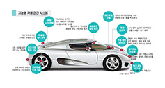 | 주행상황인지 스마트자동차 |
인프라센서, 차량상태 센서, 서라운드 센서(레이더, 영상, 초음파 등)들을 활용하여 수집한 정보를 바탕으로 실시간 자가진단 및 정보제공, 주행상황 위험경보, 능동안전 주행제어를 유도, 자동차에서는 이미 IT혹은 S/W기술이 >80%를 차지 |
| 선박+IT | 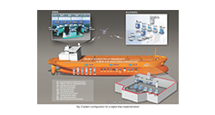 | 디지털선박 | 선박의 설계, 건조, 운항, 유지보수에 관련한 시설 및 기자재를 IT화하고, 이를 바탕으로 조선소의 생산성향상 및 선박의 성능향상 |
| 의류+NT+IT | 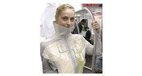 | 스마트의류 | 일반 직물의 질감과 촉감을 유지하면서 첨단 디지털 기능(예: MP3 플레이어, LED 등)이 부가된 새로운 개념의 옷으로 특수소재나 컴퓨터 칩 등을 사용해 전기신호나 데이터를 교환하거나 외부디지털 기기와 연결해 다양한 기능을 수행 |
표 3에서와 같이 IT, BT, NT등의 신기술을 서비스 산업과 융합하여 고부가 혹은 신규 가치를 창출하고 있어 향후 비대면 원격의료서비스, 수술로봇에의한 높은 정확성 확보, 지능형 물류시스템을 통한 배송 물건의 손실 및 비용의 최소화를 꾀할 수 있다.
| 융합유형 | 사 례 | 내 용 | |
|---|---|---|---|
| IT+의료 서비스 |
U-헬스케어/스마트케어 | 의료서비스와 IT기술을 융합하여, 의사와 환자의 원격진료 혹은 환자의 실시간 관리가 가능한 서비스 | |
| 로봇+의료 서비스 |
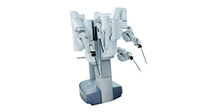 | 수술로봇 | 로봇기술과 의료서비스를 융합하여, 수술실에서 집도의의 명령에 따라 수술을 보조하거나 가이드 역할을 해주는 로봇, 의사를 대신하여 수술과정의 전체 혹은 일부 수행 |
| IT+물류/유통 서비스 |
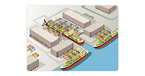 | 지능형물류 | 전자통신기술과 물류․유통서비스를 융합하여 실시간으로 물건의 위치를 확인하거나 상태를 파악함으로써, 배송물건의 손실 및 비용 등을 최소화 |
표 4에서와 같이 기존의 제품 및 서비스 영역들이 기술의 발전이나 소비자 요구로 인해 제품간, 서비스간, 제품 및 서비스간 융합으로 새로운 부가가치를 창출하고 있으며, 그 대표적인 예로 스마트폰을 활용한 다양한 서비스제공, 인터넷TV, 의료와 관광을 결합한 새로운 서비스산업의 창출로 이어지고 있다.
| 융합유형 | 사 례 | 내 용 | |
|---|---|---|---|
| 휴대폰+서비스 | 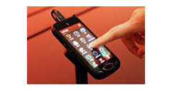 | 스마트폰 | 휴대폰과 멀티미디어(MP3 플레이어, 카메라 등), 다양한 응용 컨텐츠 서비스를 하나의 비즈니스 모델로 융합 |
| TV+서비스 | 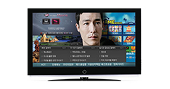 | 인터넷TV (IPTV) |
TV가 인터넷 서비스와 융합되어, 인터넷이나 전화 등 방송통신 융합서비스 제공 |
| 서비스+서비스 | 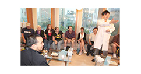 | 의료+관광 | 의료와 관광의 결합을 통해 새로운 서비스 제공 |
산업융합제품의 신속시장진입 지원을 위한 규제샌드박스
산업융합제품의 개발 및 출시는 적합한 인증기준이나 법제도가 마련되기 전에 출시가 이루어지다보니, 새로운 제품∙서비스에 맞는 인증∙허가 기준이 부재하거나
적용이 곤란하여 시장출시가 지연되는 사례가 발생되고 있는 실정이어서, 산업부에서는 산업융합촉진법 제정(2011.04)을 통해 산업융합제품의
신속시장진입을 지원해오고 있다.
또한, 관계부처 협력으로 규제샌드박스제도 도입(2019.01.17.)을 통해 기업들이 혁신적 아이디어를 마음껏
실현할 수 있도록 새로운 제품이나 서비스에 대해 일정기간 동안 기존 규제를 면제하거나 유예시켜주는 제도가 시행중인데, 규제샌드박스는 아이들이 안전하게
마음껏 뛰어놀 수 있는 모래 놀이터(sandbox)를 뜻한다.
[그림 1] 규제샌드박스를 통한 다양한 제품 및 서비스 출시
그림 1에서와 같이 전기자동차의 상용화 이후 전기차 충전, 사용후 배터리의 재사용, 수소충전 등 다양한 전후방 신산업이 출현하고
있고, 의료바이오분야의 경우 재외국민 비대면 진료서비스, 휴대용 방사선 촬영장치 활용 의료서비스, 개인 맞춤 화장품 등 다양한 제품과 서비스가
상용화 및 시장진입을 위해 규제샌드박스제도가 적극적으로 활용되고 있다.
또한, 스마트서비스의 경우 자율주행 셔틀버스 운행서비스, 인공지능 자율주행 로봇, 유인 자율주행 트럭 기반 화물 간선운송 서비스, 스마트
주차로봇서비스 등이 출시되고 있고, 신소재/신공정/신제품 분야의 경우 글램핑용 조립식 돔텐트, 친환경 비가교 폴리프로필렌 절연케이블, 통신케이블
활용 스마트 조명 등 다양한 제품이 출시되고 있다.
규제샌드박스는 그림 2와 같이 ①제품서비스관련 인허가 사항 및 규제등을 부처로부터 일괄 확인하여 빠른시장출시의 발판을 마련하기위한 규제신속확인(필요에따라 실증특례, 임시허가제도 연계), ②신제품/서비스의 시장출시에 앞서 안전성 등을 시험/검증 할 수 있도록 제한된 범위에서 규제 유예를 위한 실증특례(2년이내/1회연장가능, 법령정비요청제를 통해 해당시 임시허가전환가능) 그리고, ③안전성 등의 검증이 완료된 신제품서비스의 신속한 시장출시를 위해 관련 규제유예를 위한 임시허가(법령정비가 완료될 때까지 특례기간 연장)의 3가지로 구분된다.
규제샌드박스는 예측불가능하고 빠르게 변화하는 기술혁신에 대해 법령과 제도가 일일이 선제적으로 대응하는 것이 사실상 불가능하다는 현실에서 출발하였으며, 2019년도에 총 4개부처에서 4개의 규제샌드박스 제도가 시행되었고, 2020년도에 추가법률개정을 통해 국토부의 스마트도시 규제샌드박스와 과기부의 연구개발 특구 규제샌드박스 2개가 추가되어 그림 3과 같이 전체 6개부처에서 시행되고 있다.
[그림 2] 규제샌드박스를 구성하는 규제혁신 3종세트(신속확인, 실증특례, 임시허가)
[그림 3] 우리나라 규제샌드박스추진체계(‘21.08기준)
제샌드박스의 지원현황(그림 4)을 보면, 과기부(ICT융합) 173건, 산업부(산업융합) 368건, 금융위원회(금융혁신) 238건, 중소벤처기업부(지역특구) 84건, 국토교통부(스마트도시) 40건, 과학기술정보통신부(연구개발특구) 15건으로 전체 918건을 나타내고 있으며, 기업의 애로사항 해결을 위해 많은 노력을 하고 있다.
그림 4 규제샌드박스 현황(규제정보포털 2023.06.14.)
규제샌드박스 제도는 헌법과 행정법 등 공법체계의 근간을 이루는 ‘법률유보’원칙 적용의 예외로서 새로운 기술변화에 대응하기 위한 성격을 지니고 있으며,
‘법률유보’원칙은 국민의 자유와 권리를 제한하기 위해서는 국민의 대표기관인 입법부가 제정한 법률에 그 근거를 두어야 한다는 원칙으로서, 우리나라
규제법령체계의 기본을 이루고 있는 법원칙이다.
급변하는 시장환경과 급격한 기술진보의 추세를 따라잡기 위해서는 정태적인 법률유보원칙을 고수만 해서는 안된다는 현실적 필요에 의해 도입된 규제샌드박스
제도는 법률유보 원칙의 일시적 유예나 정지 또는 완화된 적용을 내용으로 하고 있다.
규제샌드박스는 신기술의 사업화에 있어서 필수적인 시험•검증(실증)을 하기위해서 현행 법령상 제약을 일시적으로 유예•완화•면제하는 것이지 기존 규제체계를
전면적으로 무력화하고자 하는 취지가 아니어서, 규제샌드박스는 영구적 조치가 아니라 일시적•잠정적 조치로서의 성격을 가지고 있다.
산업융합제품의 안전성 및 신뢰성확인을 위한 기술기준의 중요성
혁신적 아이디어를 기반으로 하는 산업융합제품은 규제샌드박스를 통해 미래기술의 신속한 상용화를 이끌어낼 수 있는 장점이 있으나, 기술기준이 없이 출시될 경우, 소비자의 안전성을 확실히 보장하고 있지는 않고 있어, 시장에서의 불안감으로 나타날 수 있다.
기존 제품의 경우 어느 정도 산업화가 이루어진 후, 제품 또는 기술에 대한 표준화가 이루어져 왔으나, 최근에는 기술의 생명주기가 상당히
짧아졌으며, 기존 기술의 빠른 대체 및 신속한 시장출시를 위한 시의적절한 신속한 기술기준의 마련이 중요한 이슈가 되고 있다.
즉, 기술의 선점과 동시에 기술기준의 마련을 통해 시장지배력을 강화시킬 수 있으며, 또한 사용자의 안전과 기술의 신뢰성을 확보할 수 있고, 더
나아가 초기시장 장악을 통한 시장 선점이라는 전략적 수단으로써도 중요시되고 있다.
기술의 혁신과 안전성확보를 위해 다양한 분야의 전문가들에 의해 제품, 시스템, 서비스 등에 대한 보다 객관적이면서 높은 신뢰성을 확보한
기술기준의 개발이 신속히 이루어져야 할 필요가 있기때문에, 새로운 기술의 개발을 추진함과 동시에 기술기준에 대한 연구도 함께 이루어질 경우 더
빠른 시장진입을 예상할 수 있다.
산업융합으로 인해 기술기준의 경우도 산업간 파괴가 일어나고 있어, 전통산업에서는 고려하지 않았던 항목에대한 기술적 검토와 새로운 평가장비의 개발도 이루어질수 도 있으며, 적정한 기술기준의 제시를 통해 기술의 혁신성을 잘 나타낼 수 있어야 한다.
이러한 안전장치 마련과 기업지원을 위해 2020년이후 산업부에서는 규제샌드박스 실증특례, 임시허가대상 융합신제품의 기술기준(안)을 개발해오기
시작했으며, 약 80여개의 기술기준(안)이 개발되었거나 개발중인 상태이다.
규제샌드박스에 신청된 기술중에 안전성 확보가 필요한 대상을 선정하여, 기술기준(안) 마련을 지원하고 있으며, 드론, 자율주행, 웨어러블,
가상현실, 소프트웨어를 통한 서비스, 전기자동차 및 배터리, 수소, 건강기능식품, 개인맞춤형 화장품, 통신, 로봇, 의료기기, 환경, 에너지,
반려동물분야 등 다양한 기술과 제품 및 서비스에 대한 상용화를 위해 많은 기업들을 지원하고 있다.
따라서, 다양한 산업융합제품과 새로운 서비스의 출시가 가속화되고 있는 가운데, 기술기준이 우수하고 혁신적인 아이디어가 시장을 진입하는데 있어, 규제의 어려움을 해결할 수 있는 중요한 열쇠라고 판단되며, 기술기준을 통해 신뢰를 바탕으로 미래시장을 신속히 열어나갈 수 있도록 많은 기업의 노력과 전문가들의 관심이 필요하다고 할 수 있다.
참고문헌
1. KOSI 중소기업 포커스 제21-19호 우리나라 현행 규제샌드박스의 제도적 효율성 제고방안(김권식 연구위원, 2021.10.12.)
2. 한국산업기술진흥원 규제혁신단 규제샌드박스 규제사례집(2023.05)